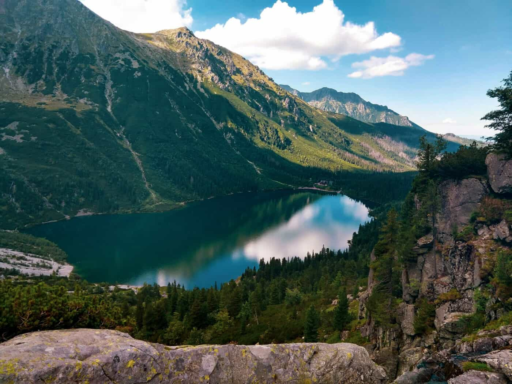
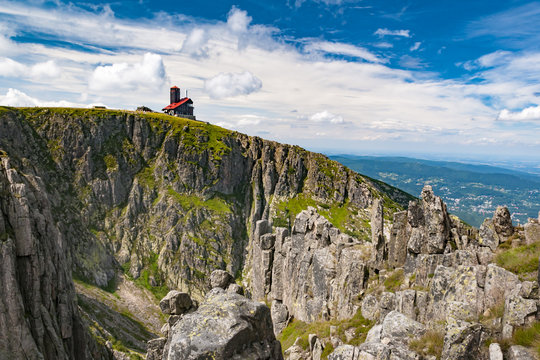
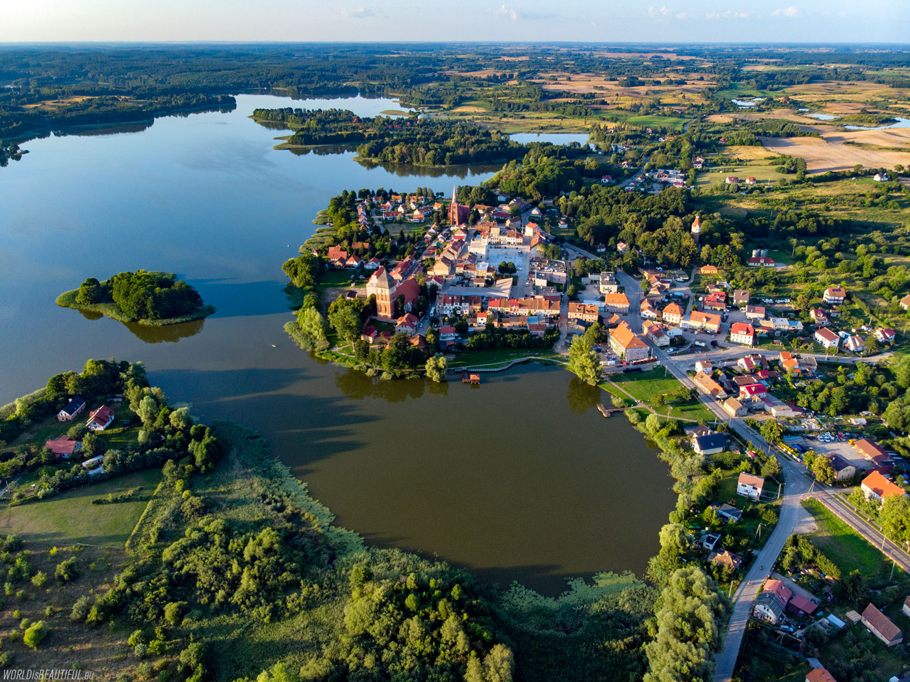
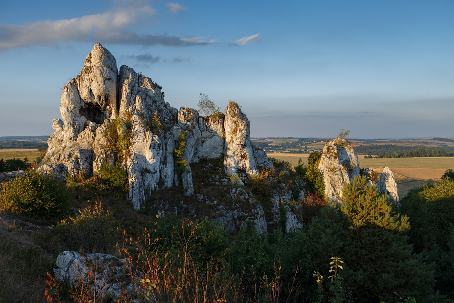
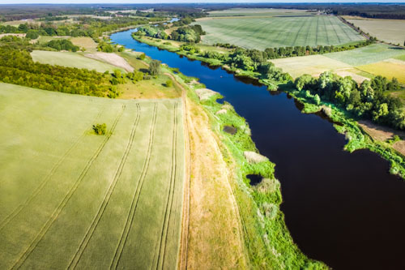
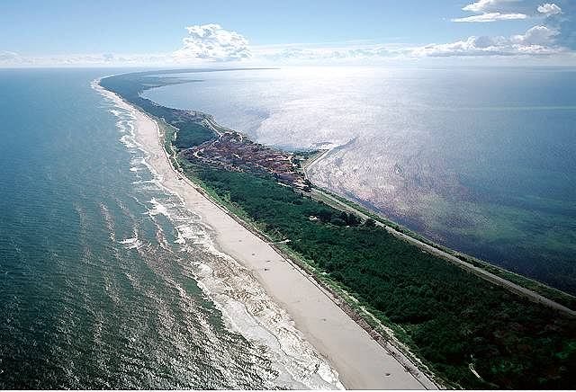
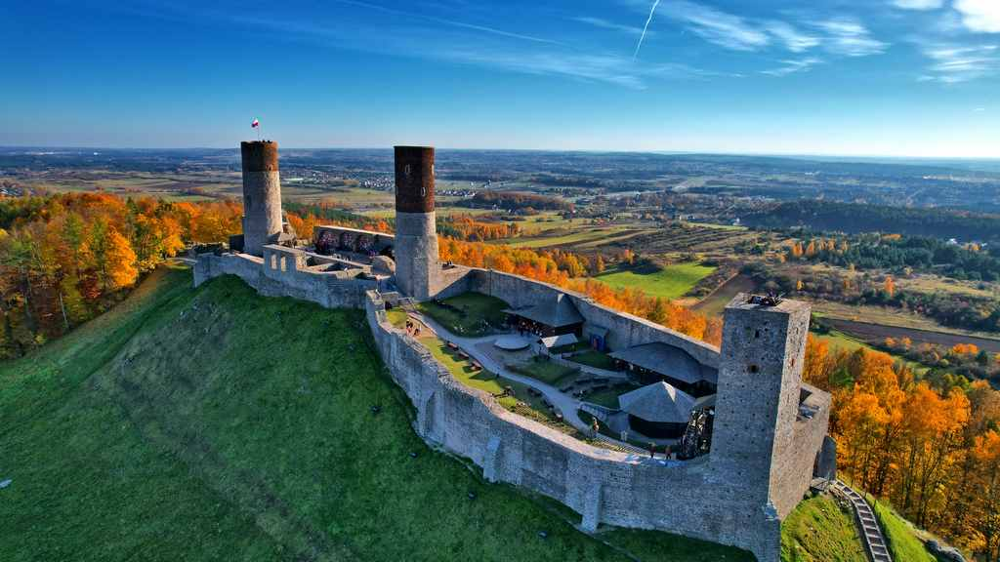
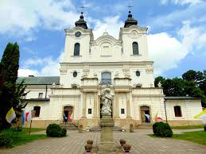
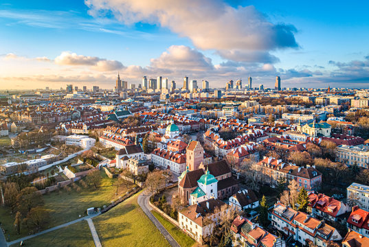
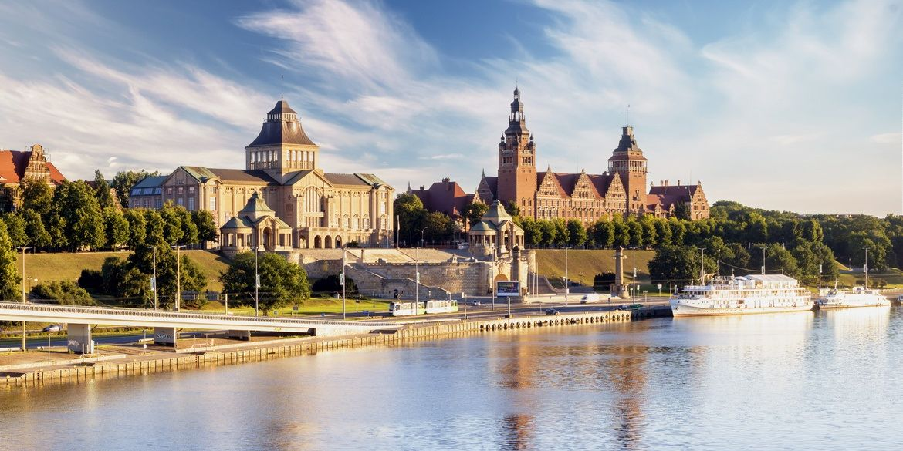

Ta strona została stworzona, aby przybliżyć różnorodne regiony geograficzne Polski. Znajdziesz tutaj rozbudowane opisy dziesięciu krain – od majestatycznych gór, przez malownicze niziny, aż po urokliwe pobrzeża i wyżyny. Każdy region został dokładnie opisany pod kątem przyrody, historii, kultury oraz atrakcji turystycznych. Zapraszamy do zapoznania się z poszczególnymi regionami.
Karpaty to rozległy system górski rozciągający się przez Europę Środkową, obejmujący nie tylko Polskę, ale także Czechy, Słowację, Ukrainę, Rumunię i Serbię. W polskiej części dzielą się na trzy główne jednostki: Karpaty Zachodnie, Karpaty Wschodnie oraz Karpaty Południowe. Najbardziej znanym pasmem są Tatry, gdzie znajduje się najwyższy szczyt – Rysy (2499 m n.p.m.). Region ten przyciąga rocznie tysiące turystów, miłośników wędrówek, narciarzy i badaczy przyrody. Niezliczone szlaki, malownicze doliny i unikalna fauna oraz flora czynią Karpaty miejscem niezwykle atrakcyjnym.
Flora i fauna Karpat są niezwykle zróżnicowane. W lasach porastających zbocza gór dominują sosny, świerki, jodły i brzozy, które tworzą gęstą, zieloną osłonę. Region jest siedliskiem dla wielu gatunków zwierząt, w tym niedźwiedzi brunatnych, wilków, rysi, saren oraz dzików. Liczne parki narodowe, takie jak Tatrzański, Pieniński czy Babiogórski, dbają o ochronę unikalnych ekosystemów, umożliwiając obserwację rzadkich gatunków w ich naturalnym środowisku. Dzięki temu Karpaty są nie tylko atrakcją turystyczną, ale również miejscem intensywnych badań naukowych.
Kultura góralska to kolejny niezwykle istotny aspekt regionu. Mieszkańcy gór, znani jako górale, pielęgnują tradycje przekazywane z pokolenia na pokolenie. Folklor, muzyka grana na fujarach czy skrzypcach, tradycyjne tańce i stroje tworzą niepowtarzalny klimat, który odzwierciedla ciężką pracę, ale i radość życia w górach. Drewniane chaty, kapliczki oraz regionalne rzemiosło stanowią żywy dowód na bogactwo kulturowe tych terenów.
Historia Karpat jest równie fascynująca. Od średniowiecznych bitew, przez okres rozbiorów, aż po czasy II wojny światowej – góry te były świadkiem wielu przełomowych wydarzeń. Ruiny zamków, stare warownie i zabytkowe miasteczka przypominają o burzliwych dziejach regionu, a legendy o śpiących rycerzach dodają mu mistycznego uroku. Wiele opowieści ludowych, przekazywanych ustnie, nadaje regionowi dodatkowego klimatu i sprawia, że każdy, kto odwiedza Karpaty, czuje magię gór.
Turystyka w Karpaty rozwija się dynamicznie. Liczne szlaki turystyczne, schroniska górskie, ośrodki narciarskie oraz nowoczesne wyciągi umożliwiają korzystanie z atrakcji przez cały rok. Zakopane, znane jako zimowa stolica Polski, jest doskonałym przykładem miasta, które wykorzystało potencjał gór do rozwoju turystyki, oferując atrakcje zarówno zimą, jak i latem.
Kulinaria regionu stanowią nieodłączny element tradycji. Lokalne specjały, takie jak oscypek, bundz czy kwaśnica, przygotowywane według tradycyjnych receptur, cieszą podniebienia mieszkańców i turystów. Festyny, jarmarki i regionalne imprezy kulinarne umożliwiają degustację tych przysmaków, wzmacniając jednocześnie poczucie tożsamości góralskiej.
Podsumowując, Karpaty to region o niezwykłej urodzie, bogatej historii i głęboko zakorzenionych tradycjach. Nowoczesność spotyka się tutaj z tradycją, a natura i kultura tworzą harmonijną całość, która na zawsze pozostawia niezapomniane wrażenia.
Sudety to jedno z najstarszych pasm górskich w Europie, położone w południowo-zachodniej Polsce, rozciągające się także na Czechy i Niemcy. Region wyróżnia się bogatą historią geologiczną, sięgającą setek milionów lat, co nadaje mu unikalny krajobraz pełen głębokich dolin, stromych zboczy i niezwykłych formacji skalnych.
Zielone lasy, malownicze rzeki i wodospady tworzą charakterystyczny pejzaż Sudetów. Liczne parki narodowe, takie jak Karkonoski Park Narodowy, chronią unikalne ekosystemy, umożliwiając obserwację rzadkich gatunków zwierząt – od jeleni po dzikie ptaki. Mieszkańcy regionu żyją blisko natury, korzystając z dobrodziejstw górskich potoków i czystej wody.
Historia Sudetów obfituje w liczne wydarzenia – od średniowiecznych bitew, przez okres rozbiorów, aż po dramatyczne momenty II wojny światowej. Imponujące zamki, takie jak Zamek Książ i Zamek Czocha, oraz ruiny starych warowni świadczą o strategicznym znaczeniu tych terenów. Każdy kamień opowiada o burzliwej przeszłości regionu.
Sporty zimowe mają ogromne znaczenie w Sudetach. Ośrodki narciarskie, np. w Szklarskiej Porębie czy Karpaczu, oferują doskonałe warunki do uprawiania narciarstwa, snowboardingu oraz biegów narciarskich. Zimą stoki są pełne, a latem szlaki turystyczne zapraszają do pieszych wędrówek i rowerowych wycieczek.
Kultura ludowa Sudetów jest równie bogata – tradycyjne rękodzieło, muzyka i tańce ludowe są pielęgnowane przez mieszkańców, którzy organizują festyny i jarmarki. Wydarzenia te nie tylko integrują społeczność, ale również przyciągają turystów spragnionych autentycznych doznań.
Podsumowując, Sudety to region, w którym historia, przyroda i kultura łączą się w jedną spójną całość. Każdy, kto odwiedzi te góry, poczuje ich niepowtarzalny klimat, a malownicze krajobrazy na zawsze pozostaną w pamięci.
Pojezierza Polski to regiony o niezwykłej urodzie, gdzie setki jezior tworzą malowniczy krajobraz otoczony lasami, łąkami i pagórkami. Każde jezioro ma swoją unikalną historię geologiczną, a krystalicznie czyste wody są domem dla wielu gatunków ryb, roślin wodnych i ptaków. Region ten stanowi idealne miejsce do wypoczynku i rekreacji.
Obszary takie jak Mazury, Pojezierze Drawskie i Wielkopolskie oferują liczne atrakcje turystyczne – od żeglowania, kajakarstwa, po wędkowanie i piesze wędrówki. Chronione parki krajobrazowe oraz rezerwaty przyrody dbają o zachowanie tego cennego dziedzictwa.
Bogactwo kulturowe pojezierzy jest równie imponujące jak ich walory przyrodnicze. Od średniowiecznych osad, przez rozwój handlu, aż po nowoczesne formy turystyki – te tereny od dawna stanowią ważny punkt na mapie kulturowej Polski.
Przyroda pojezierzy zmienia się wraz z porami roku – wiosną jeziora budzą się do życia, latem lśnią w słońcu, jesienią przybierają ciepłe barwy, a zimą emanują spokojem. Liczne trasy spacerowe i rowerowe pozwalają na pełne zanurzenie się w tym magicznym otoczeniu.
Podsumowując, pojezierza Polski to region pełen harmonii, bogactwa przyrodniczego i kulturowego, oferujący niezapomniane doświadczenia dla każdego odwiedzającego.
Wyżyny w Polsce to obszary o łagodnie falujących krajobrazach, obejmujące m.in. Wyżynę Lubelską, Krakowsko-Częstochowską oraz Śląską. Charakteryzują się rozległymi równinami, pagórkami i malowniczymi dolinami, tworząc harmonijną przestrzeń łączącą tradycję rolniczą z nowoczesnym rozwojem.
Historia wyżyn sięga czasów prehistorycznych, kiedy to żyzne gleby sprzyjały rozwojowi osadnictwa. W średniowieczu powstawały tu liczne zamki i warownie, co miało kluczowe znaczenie dla rozwoju kultury ludowej.
Kultura regionu jest niezwykle bogata – tradycyjne rzemiosło, muzyka, tańce ludowe i lokalne obyczaje stanowią integralną część tożsamości mieszkańców. Festyny i jarmarki umożliwiają przekazywanie tradycji z pokolenia na pokolenie.
Gospodarka wyżyn opiera się głównie na rolnictwie, co wpływa na malowniczy krajobraz pełen pól uprawnych, sadów i winnic. Pory roku nadają regionowi niepowtarzalny charakter – od wiosennego rozkwitu, przez letnie dojrzewanie plonów, aż po jesienne barwy i zimowy spokój.
Podsumowując, wyżyny Polski to region, w którym historia, tradycja i nowoczesność współistnieją, tworząc przestrzeń, która zapiera dech w piersiach.
Niziny Polski to rozległe tereny o niskim ukształtowaniu, stanowiące serce kraju pod względem gospodarczym i kulturowym. Obszary takie jak Mazowsze, Wielkopolska czy Dolny Śląsk charakteryzują się żyznymi glebami, rozległymi polami uprawnymi i spokojnymi krajobrazami.
Krajobraz nizin to przede wszystkim łąki, pola uprawne, lasy oraz malownicze rzeki, które kształtują się na przestrzeni wieków. Rzeki takie jak Wisła, Odra czy Warta pełnią ważną rolę w komunikacji i rozwoju miast.
Historia nizin jest bogata – od starożytnych osad, przez średniowieczne miasta, aż po współczesne centra gospodarcze. Tradycje przekazywane z pokolenia na pokolenie czynią te tereny unikalnymi.
Współczesne niziny to dynamiczne centra miejskie, w których nowoczesne technologie i rozwinięta infrastruktura łączą się z tradycyjnym rolnictwem. Rozwój przemysłu i edukacji przyczynia się do wysokiej jakości życia mieszkańców.
Podsumowując, niziny Polski to region, gdzie natura i człowiek współistnieją w harmonii, a bogactwo historyczne i kulturowe tworzy niepowtarzalny klimat.
Pobrzeża Polski to malownicze tereny wzdłuż wybrzeża Morza Bałtyckiego, które łączą piękno plaż, wydm i klifów. Region ten zachwyca widokiem, gdzie morskie fale spotykają się z rozległymi piaszczystymi plażami, tworząc niepowtarzalną scenerię.
Historia pobrzeży sięga średniowiecza, kiedy to wybrzeże stanowiło ważny punkt handlowy. Zabytkowe miasta, takie jak Gdańsk czy Kołobrzeg, rozwijały się dzięki portom i handlowi morskiemu.
Przyroda pobrzeży jest niezwykle zróżnicowana – od szerokich plaż po wydmy i klify. Morskie fale nieustannie kształtują brzeg, tworząc dynamiczny krajobraz zmieniający się wraz z porami roku.
Podsumowując, pobrzeża Polski to region, który łączy historię, przyrodę i kulturę morską, oferując niezapomniane wrażenia dla każdego odwiedzającego.
Góry Świętokrzyskie to jedno z najstarszych pasm górskich w Polsce, pełne tajemnic i historii. Położone w centralnej Polsce, wyróżniają się łagodnym, malowniczym reliefem z licznymi skałami, wzgórzami i dolinami.
Region zachwyca różnorodnością przyrody – od stromych zboczy po starożytne lasy, w których można spotkać rzadkie gatunki roślin i zwierząt. Liczne szlaki turystyczne zachęcają do aktywnego wypoczynku.
Kultura i historia Gór Świętokrzyskich są równie fascynujące – zamki, klasztory i legendy opowiadają o bogatej przeszłości tych terenów.
Podsumowując, Góry Świętokrzyskie to region pełen historii, przyrody i kultury, który na zawsze zapada w pamięć.
Podkarpacie to region w południowo-wschodniej Polsce, znany z malowniczych krajobrazów, bogatej historii i głęboko zakorzenionych tradycji kulturowych. Obszar ten obejmuje zróżnicowane tereny – od gór po doliny i lasy.
Kultura Podkarpacia opiera się na tradycjach przekazywanych z pokolenia na pokolenie. Festyny, jarmarki i lokalne obyczaje tworzą niepowtarzalny klimat regionu.
Historia regionu, od starożytnych osad po średniowieczne zamki, świadczy o bogatej przeszłości, która wpłynęła na tożsamość Podkarpacia.
Podsumowując, Podkarpacie to region pełen uroku, który oferuje niezliczone możliwości wypoczynku i odkrywania tradycji.
Mazowsze to historyczna kraina w centralnej Polsce, będąca sercem kraju pod względem kulturowym i gospodarczym. Charakteryzuje się rozległymi równinami, malowniczymi rzekami i bogatą historią.
Historia Mazowsza, od średniowiecznych osad po nowoczesne metropolie, tworzy fascynujący obraz przemian zachodzących na tych terenach.
Kultura regionu, tradycyjne rzemiosło, kuchnia i obyczaje są pielęgnowane przez mieszkańców, co nadaje Mazowszu wyjątkowy charakter.
Podsumowując, Mazowsze to region łączący bogatą historię z dynamicznym rozwojem współczesnym, który zachwyca zarówno mieszkańców, jak i turystów.
Pomorze to region nadmorski rozciągający się wzdłuż Morza Bałtyckiego, łączący historię, kulturę morską i malownicze krajobrazy. Charakterystyczne porty, urokliwe plaże, klify i wydmy tworzą niepowtarzalny klimat.
Historia Pomorza sięga średniowiecza, a miasta takie jak Gdańsk odegrały kluczową rolę w handlu morskim.
Podsumowując, Pomorze to region o niezwykłym bogactwie przyrodniczym, historycznym i kulturowym, który dostarcza niezapomnianych wrażeń.
